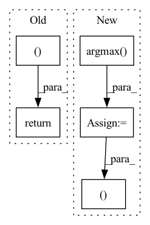

Pattern ID :41810

Before Change
// Default return value. Erring on the side of caution here by
// being super verbose.
return [([], [])]
After Change
print("infinite_pairs =", infinite_pairs)
// "Pair off" all the indices
max_index = torch.argmax(x)
fake_destroyers = torch.empty_like(infinite_pairs).fill_(max_index)
infinite_pairs = torch.stack(
(infinite_pairs, fake_destroyers), 1
)
print("infinite pairs, fixed =", infinite_pairs)
In pattern: SUPERPATTERN
Frequency: 3
Non-data size: 5
Instances
Fragment ID: 117231864
Project Name: aidos-lab/pytorch-topological
Commit Name: 0dd25924d9fd7691de14281351dcee1edd8cfc26
Time: 2021-12-21
Author: bastian@rieck.me
File Name: torch_topological/nn/cubical.py
M Class Name: Cubical
N Class Name: Cubical
M Method Name: _extract_generators_and_diagrams(4)
N Method Name: _extract_generators_and_diagrams(4)
M Parent Class: nn.Module
N Parent Class: nn.Module
M File Name: torch_topological/nn/cubical.py
N File Name: torch_topological/nn/cubical.py
M Start Line: 88
M End Line: 119
N Start Line: 74
N End Line: 141
'>
Before Change
else:
l1_loss = 0.0
// return class_loss + object_loss + l1_loss + bbox_loss * self.bbox_loss_weight
return class_loss, bbox_loss, object_loss, l1_loss
def __call_single__(self, inputs):
bbox_labels_true, bbox_labels_pred = inputs[0], inputs[1]
return tf.cond(
After Change
// return class_loss + object_loss + l1_loss + bbox_loss * self.bbox_loss_weight
num_valid_anchors = tf.cast(tf.shape(bboxes_pred)[0], bboxes_pred.dtype)
class_acc = tf.reduce_mean(tf.cast(tf.argmax(labels_true, axis=-1) == tf.argmax(labels_pred, axis=-1), "float32"))
return class_loss, bbox_loss, object_loss, l1_loss, num_valid_anchors, class_acc
def __call_single__(self, inputs):
bbox_labels_true, bbox_labels_pred = inputs[0], inputs[1]
return tf.cond(
'>
Fragment ID: 117231866
Project Name: leondgarse/keras_cv_attention_models
Commit Name: dd60502794650a642528945d59ba636f6c7ff080
Time: 2022-03-07
Author: leondgarse@gmail.com
File Name: keras_cv_attention_models/coco/losses.py
M Class Name: AnchorFreeLoss
N Class Name: AnchorFreeLoss
M Method Name: __valid_call_single__(3)
N Method Name: __valid_call_single__(3)
M Parent Class: tf.keras.losses.Loss
N Parent Class: tf.keras.losses.Loss
M File Name: keras_cv_attention_models/coco/losses.py
N File Name: keras_cv_attention_models/coco/losses.py
M Start Line: 162
M End Line: 173
N Start Line: 177
N End Line: 188
'>
Before Change
loss = self.forward_loss(imgs1, pred)
// result = self.unpatchify(pred)
result = self.late_fusion(pred, trans_matrices, num_agent_tensor, batch_size)
return loss, result, mask, pred
def amo_individual_bev_multi_mae_vit_base_patch8_dec512d8b(**kwargs):
After Change
// loss = self.forward_loss(imgs1, pred)
loss = self.forward_bce_loss(imgs1, pred)
// result = self.unpatchify(pred)
ind_result = torch.argmax(torch.softmax(pred, dim=1), dim=1)
result = self.late_fusion(ind_result, trans_matrices, num_agent_tensor, batch_size)
// print(result.size())
// ind_result = self.unpatchify(pred)
return loss, result, mask, ind_result
def amo_individual_bev_multi_mae_vit_base_patch8_dec512d8b(**kwargs):
'>
Fragment ID: 117231862
Project Name: coperception/star
Commit Name: 5c651e50aec4838fb97747b609563649b465444f
Time: 2022-06-06
Author: 954742885@qq.com
File Name: coperception/models/transformers/multiagent_mae.py
M Class Name: AmortizedIndivMMAEViT
N Class Name: AmortizedIndivMMAEViT
M Method Name: forward(8)
N Method Name: forward(8)
M Parent Class: MultiAgentMaskedAutoencoderViT
N Parent Class: MultiAgentMaskedAutoencoderViT
M File Name: coperception/models/transformers/multiagent_mae.py
N File Name: coperception/models/transformers/multiagent_mae.py
M Start Line: 956
M End Line: 960
N Start Line: 984
N End Line: 992